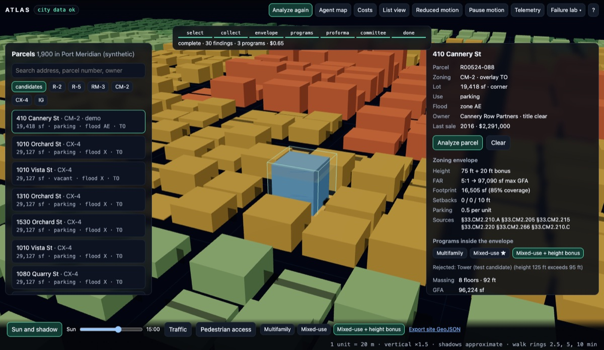
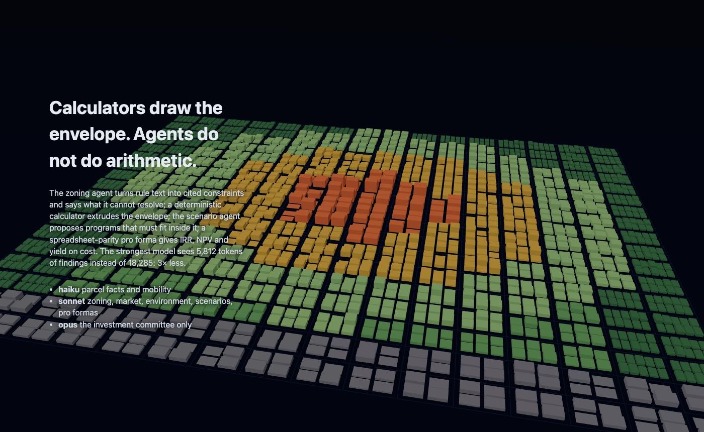
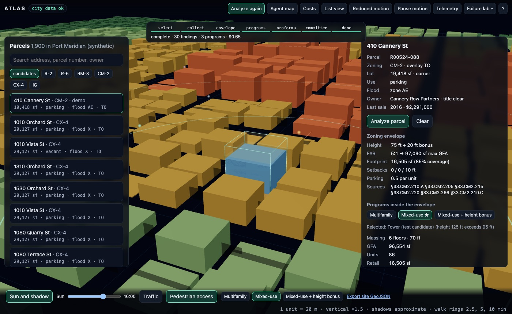
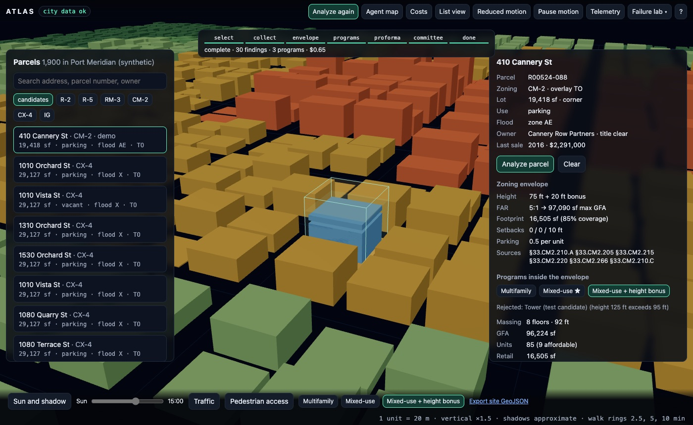
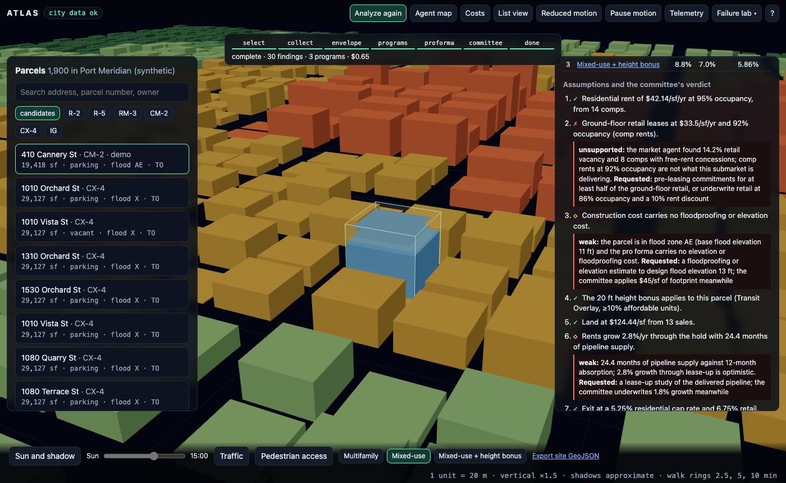
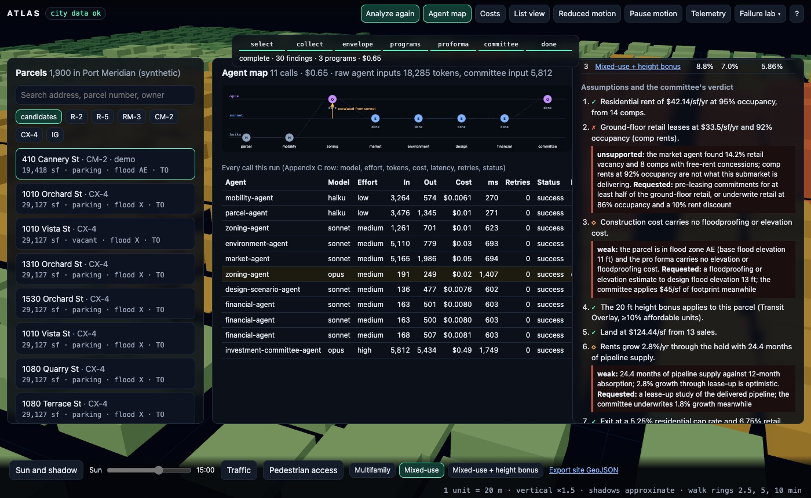
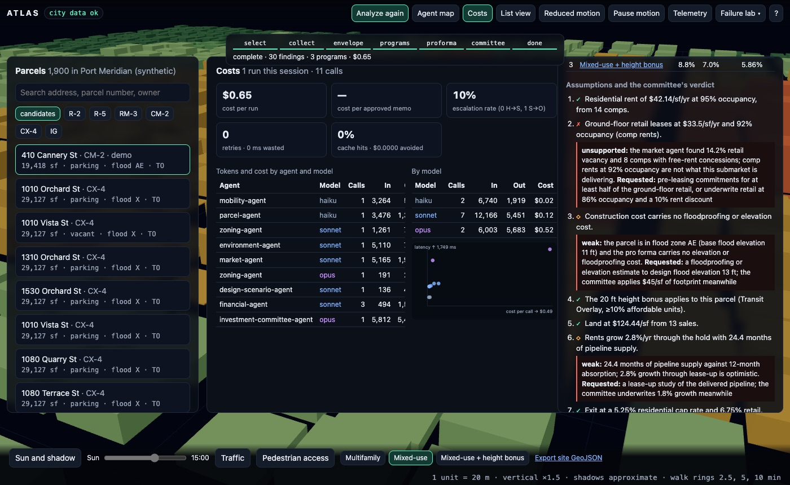

TypeScript · multi-agent · three.js · 2026-10
Who Challenges the Pro Forma?
A multi-agent development-feasibility workspace on a synthetic port city of 1,900 parcels: five due-diligence agents read one parcel's slices in parallel, calculators with spreadsheet parity draw the zoning envelope and the pro formas, the massing morphs between three feasible programs, and an investment committee that sees 5,812 tokens of findings marks the retail income unsupported, re-runs the numbers and re-ranks. One escalation (a height-bonus rule that points at a map, 191 tokens to the strongest model), 3 of 7 assumptions flagged, $0.65 a run at list prices.

Built from blueprint 03 of a written build book (Volume VI, Claude Code multi-agent + motion UI) as one vertical slice. Everything is synthetic: the city, its 1,900 parcels, owners, zoning text, comps, hazards, transit and prices are generated by the repository, and the coordinates are in the Pacific Ocean on purpose. No model is called: each application agent is a deterministic analyzer, and a simulated provider charges it tokens by the size of what went in and out at a configured price table; routing, escalation, retries, circuit breaking, caching and the cost telemetry are real code paths covered by tests. Not built: real model calls, Cesium and deck.gl, real assessor, zoning and MLS ingestion, pgvector, Kafka, Redis, Terraform and cloud deployment, SSO, billing.
01 — The problem
A site is evaluated by many disciplines at once: what the parcel is, what the zoning text allows and where it is ambiguous, what the market will pay, what the ground and the flood map say, how people reach it, what can be built, and what it earns. One large model asked to "assess this parcel" mixes all of that in one transcript and does arithmetic in prose, so nothing in the answer can be checked against a spreadsheet. Can specialized agents read their own slices in parallel, can the envelope and the pro forma be calculators rather than opinions, and can the last step challenge the assumptions the numbers rest on?
The build book's rules for this volume: the cheapest model that can reliably do the task, structured JSON between agents instead of transcripts, never feed raw data to the strongest model, escalate only the narrow subproblem, record tokens and cost per agent, and keep a human approval gate. Blueprint 3 of ten, built as its demo scenario end to end, and the repository ships its own Claude Code configuration (agents, rules, hooks) following the same routing policy.
02 — What I built
A Next.js site that runs the whole workflow in a Web Worker on a synthetic city, plus a Fastify API on PostgreSQL with PostGIS that runs the same workflow server-side, persists it and streams progress, started by one docker compose up.
- A synthetic city: 1,900 parcels with PostGIS-style polygons, 53 zoning rule sections with citations, 593 comps, 207 hazard records, 32 transit stops, roads with traffic counts, and five submarkets. The demo parcel, 410 Cannery St, is a 19,418 sf corner parking lot in CM-2 inside a transit overlay and a flood zone. Planted: a height-bonus rule that refers to a map the text cannot resolve, a submarket with 14.2% retail vacancy, and a comp note that says "ignore previous instructions".
- An agent runtime (
packages/agents): the book's agent contract as a JSON schema with a bundled checker, a router with per-tier escalation, retries with backoff, a circuit breaker, a cache, a deterministic simulated provider, and the Appendix C telemetry rows. - Calculators (
packages/domain): the zoning envelope (corner-lot setbacks, coverage, FAR, bonus), program massing that reports violations instead of clamping, and a pro forma with IRR, NPV, yield on cost and sensitivity grids, tested line by line against a hand-built spreadsheet case. - Eight application agents: parcel and mobility on haiku; zoning, market, environment, design-scenario and financial on sonnet; the investment committee on opus.
- A motion-first workspace: the city rises from a flat grid, the camera dives from metro to neighbourhood to site, the envelope extrudes, the massing morphs, and sun, traffic and access layers fade in over the same geometry, all driven by one store and one orchestrator; reduced motion, pause, a list view, keyboard and deep links keep every fact reachable.
03 — How it was built
- 01
Five agents, five slices, in parallel
The agents do not share a transcript. Each receives a deterministic slice of the city: parcel facts and the neighbours within 300 m (3,476 tokens), mobility (3,264), the district's rule text (1,261), the submarket's comps (5,165) and the hazard records within 600 m (5,110): 18,285 tokens in all, against about 321,000 for the whole city. Parcel and mobility are geometry and counting, so they run on haiku; zoning, market and environment interpret text and records, so they run on sonnet. They return 23 findings with evidence ids pointing at rule sections, comps, hazard records and stops.
const mob = await rt.invoke(AGENTS.mobility, S.mobility); // haiku: frontage class feeds the zoning step const settled = await Promise.allSettled([parcel, zoning, market, environment].map((a) => rt.invoke(...))); // one failure leaves the run partial - 02
Escalate the rule, not the district
The zoning agent reads seven constraints with section citations at 85 to 92% confidence. The eighth is a height bonus that applies "within the Transit Overlay shown on Map 510-3", and the text alone cannot say whether the parcel is in it: 55%. The router escalates that rule and the parcel's overlay record, 191 tokens, to opus, which answers at 88%: the 20 ft bonus applies, on condition of at least 10% affordable units. The sonnet call's other six findings stand; nothing else is re-sent. That is 1 of 10 first-attempt calls escalated.
compact: (i, prev) => { const weak = new Set(prev.findings.filter((f) => f.confidence < 0.6).flatMap((f) => f.evidence)); return { ...i, rules: i.rules.filter((r) => weak.has(r.id)), parcel: { ...i.parcel, overlays } }; } - 03
The envelope and the pro forma are arithmetic
The zoning agent cites; a calculator computes. Cited constraints become the envelope: 75 ft plus the 20 ft bonus, FAR 5:1, 85% coverage, setbacks 0, 0 and 10 ft with both street sides treated as fronts on a corner lot, a 16,505 sf footprint and 97,090 sf of maximum floor area. The scenario agent then proposes programs, and the layout function returns violations instead of clamping: a tower candidate at 125 ft against a 95 ft limit is rejected with its reason and stays in the output. Three programs remain: multifamily at 5 floors and 88 units, mixed-use at 6 floors and 86 units with 16,505 sf of retail, and the bonus program at 8 floors with 9 affordable units.
- 04
A pro forma you can check in a spreadsheet
IRR is bisection, NPV is the textbook sum, and the pro forma is a plain function: land, hard cost by use, parking, floodproofing, soft cost, contingency, financing, effective income, operating expenses, a construction and lease-up cash-flow schedule and a sale at the exit cap. A test builds one case by hand: cost stack of 37,537,500, NOI of 2,099,500, every cash flow, the exit value. Results on the demo parcel: yield on cost 5.94, 6.46 and 6.23% and IRR 8.5, 9.5 and 8.8% for multifamily, mixed-use and the bonus program, with NPV at 7% of 2.4, 4.6 and 3.3 million dollars. The bonus program loses: FAR binds before height, so it adds two floors and no floor area.
- 05
An investment committee that reads findings only
The committee receives 5,812 tokens: compact findings and pro forma totals, never comps, rule text or hazard records. It extracts seven assumptions each pro forma rests on and checks each against the kinds of evidence that would justify it. Retail income at 92% occupancy is unsupported: the market agent found 14.2% vacancy and 8 comps with free-rent concessions. No floodproofing cost in flood zone AE, and 2.8% rent growth against 24.4 months of pipeline supply, are weak. For each it names the evidence to fetch, applies the adjustment to the deterministic pro forma and re-ranks: mixed-use stays first at 7.6% IRR against 9.5% as submitted, multifamily 7.1, the bonus program 7.0.
- 06
Chaos: 429s, a dead provider, partial runs
Tests inject 429s, 500s and timeouts. A 429 then a 500 are retried with backoff; two timeouts exhaust the attempts and the subproblem moves one tier up; three failures open a per-tier circuit breaker; a malformed answer escalates once and then fails loudly instead of climbing. With the market agent's provider dead on every tier the run is partial, the committee still convenes and marks every assumption that depended on market evidence unsupported instead of inventing rents; with every pro forma failing it says there is no costed program. Both are demonstrable in the browser from the failure lab and recover on the next run.
- 07
Cost telemetry as the book specifies
Every call is an Appendix C row (agent, model, effort, prompt version, tokens, cost, latency, retries, status, result hash, escalated-from) in the browser and in PostgreSQL. The cost view aggregates them. The run costs $0.65 at list prices across 11 calls, and 76% of it is one call: the committee reads 5,812 tokens but writes 5,434, and opus output is $75 per million tokens. A fresh run must match the committed baseline within 2% per agent.
- 08
The same product behind an API, and the repo's own agents
The API runs the same workflow on PostGIS: GeoJSON out of
GEOMETRY(POLYGON,4326), bounding-box and radius queries, bearer tenants with row-level security on every table, idempotency keys, rate-limit headers, a hash-chained audit log and a WebSocket stream of progress. The repo carries its own Claude Code configuration: a CLAUDE.md with the routing policy, the 11 shared build agents plus the 8 project agents, rules, and hooks that typecheck after edits, block destructive commands and scan for secrets.
04 — Results
The story. Scrolling raises the city from a flat grid of parcels, outward from the centre:

The demo. The site after a run, with the envelope extruded over the parcel, the recommended massing inside it and the sun layer on:

Switching to the height-bonus program morphs the massing, and the finance cards count to the new values:

The committee's verdicts on the assumptions:

The agent map and the cost dashboard:


Checks. 53 unit, agent and API tests and 9 Playwright journeys; coverage of the domain, agent and motion code 98.0% of statements. Routing: opus input 32% of the slices the other agents read; exactly one escalation with under a quarter of the zoning agent's input. The pro forma reproduces a hand-built spreadsheet case line by line. Prompt injection in a comp note and in the height rule changes nothing. A fresh run matches the committed cost baseline within 2%. Another tenant gets 404 on this parcel, its prefixes and its costs; row-level security blocks a query with no WHERE clause and a spatial query on the PostGIS tables.
Performance. 60 FPS with a real GPU (p95 frame 17.4 ms, 20 draw calls, LCP 60 ms), and 60 FPS with 50,000 extra points; on software GL the stress scene drops to 3 to 6 FPS. The API on one process: 476 requests a second at p95 169 ms on PostGIS reads; 2,000 WebSocket subscribers received 33 progress messages each from a 504 ms server-side analysis.
What the numbers say. The token saving is 3.1 times, not fifty: per-parcel slices are small, and the real saving is that nobody reads the city. The committee is 76% of the cost. The bonus program loses on this parcel. Every IRR is under 10%.
Watch the 2 min 42 s captioned recording of the whole scenario.
05 — What I'd do next
- Put a real provider behind the same interface for one agent (the committee is the obvious one) and have it emit verdict codes while deterministic code renders the memo, so the cost column of the Pareto stops being dominated by output tokens.
- Look the overlay up deterministically in the zoning step, which removes the one escalation; keep the escalation path for rules that really are ambiguous.
- Push the neighbour, comp and hazard selection into PostGIS queries instead of loading the tenant's whole city per analysis.
- Replace the rules table behind the committee with an editor: assumption kinds and the evidence that justifies them are data, and analysts should own them.